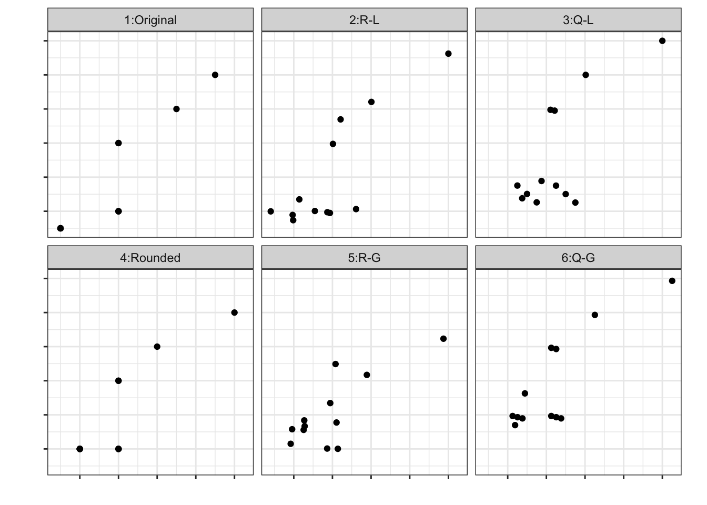
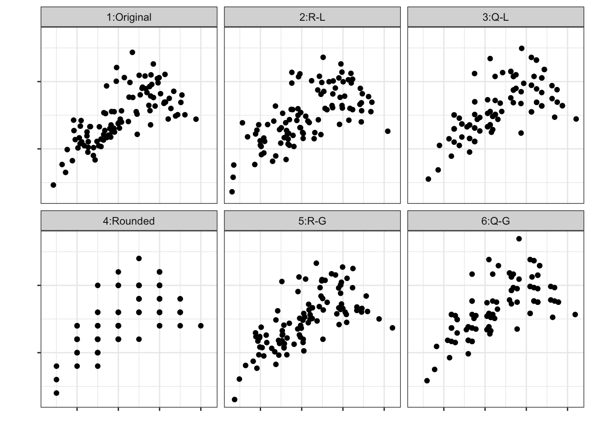
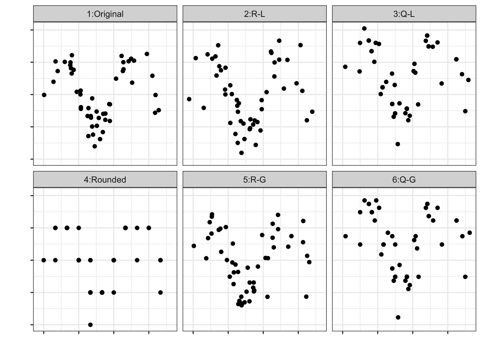

Jittered scatterplots
1 Introduction
For various reasons it is useful for spreading points in dotplot or scatterplot displays. When points are overplotted in a display the assessment of the distribution or association between variables may not be accurately interpreted. There is a long history of using dotplots for examining distributions, with a variety of recommended methods for spreading apart identical points. Wilkinson (1999) provides a simple and comprehensive discussion.
1.2 Goal and structure
Here we need to answer: Why not just use geom_jitter()?
Introduce methods for jittering in 2D and implement an R package that extends geom_jitter()
- Describe some methods/ideas
- Show application examples
- Discuss limitations and next steps
2 Methods
Combine 2 parameters to describe jittering in 2D, each parameter has two possible levels.
Noise: Random (R) or Quasi-random (Q)
Direction: Global (G) or Local (L)
Combining the 2 parameters gives 4 ways to jitter scatter plots: R-L, R-G, Q-L, Q-G.
2.1 Adding noise in 2D
Noise is related to how the jittering is generated. Traditionally in 1D, jittering is randomly generated with a uniform distribution. For 2D, random generation can be done based on a bivariate normal distribution. For a given point \((x_i, y_i)\), the first step is to compute initial noise, which is done as:
\[ \begin{pmatrix} e_x \\ e_y \end{pmatrix} \sim N(0 , \begin{pmatrix} 1/9 & 0 \\ 0 & 1/9 \end{pmatrix} ) \]
Alternatively, if there are \(r\) observations in the same position, a two-dimensional quasi-random sequence of \(r\) points can be used. Several quasi-random schemes have been proposed; in 2D, Sobol sequences seem to be a good choice.
\[ \begin{pmatrix} e_x \\ e_y \end{pmatrix} \sim Sobol(r, dim = 2) \]
2.2 Noise direction
The second step is to rotate the noise according to the observed direction in the data. Direction controls how the observed data influence the jittering; in particular, the correlation structure of the data affects the jittering direction through the correlation coefficient.
\[ \begin{pmatrix} \Delta_x \\ \Delta_y \end{pmatrix} = \mbox{chol} \left[ \begin{pmatrix} 1 & \rho_{xy} \\ \rho_{xy} & 1 \end{pmatrix} \right]^{\top} \begin{pmatrix} e_x & e_y \end{pmatrix} \]
where \(\mbox{chol}[]\) stands for Cholesky decomposition. (is this having an effect on variance too??)
Correlation, \(\rho_{xy}\), can be computed using all points (global) or with the closer points to the one being jittered (local). A local correlation can be computed using only neighbors or using kernel weights.
2.3 Jittering separation (not done!)
A third parameter that might be worth adding is Voronoi constraint. When Voronoi is TRUE, jittered points are forced to lie within the Voronoi cell of the corresponding observed point. This ensures the resulting jittered plot does not overlap and naturally controls the amount of jittering. (Not sure how hard or if this is possible to do!!)
3 Application examples
3.1 Toy examples
Each figure is a type of data plot to explore jittering under different data characteristics. There are 6 panels: the original data, the rounded data, and 4 jittered versions (random-local, random-global, quasi-local, quasi-global).
Figure 1 shows jittering in the Dayles data, where the original and rounded versions are very similar. The quasi-random options are nice since they do not jitter when there is a single point. It is possible to set the random options with the same behavior, jittering only the second point in a position.
Figure 2 shows the mpg data, which is the example used in the regular geom_jitter() page. This may not be a good example for 2D jittering since one of the variables is not really numerical. In any case, the global correlation methods show lower variability (why?) and some data structure, while there is no correlation when local methods are used.

Figure 3 shows bimodal data, where the rounded data show a lot of overplotting. Using local correlations seems to work better to respect the mixture structure.
The random methods produce more variability than the original data; this should be possible to control with some weight parameter.
It is visible that quasi-random methods produce jitter noise diagonally from upper-left to bottom-right. This is due to the Sobol sequence. When data is positively correlated, this produces jittering orthogonal to the main direction, but if the correlation is negative, the jittering is aligned with the main direction. This is odd…

Figure 4 shows results for non-linear data; it is harder to recover the original data structure…

3.2 More interesting cases
Real cases/data scenarios where 2D-jittering is useful/needed:
Survey data scatter plot with subsampling method
Age and deaths? Excess deaths in COVID?
Survey, weighted data
Scagnostics work
Where one area measured on one scale and another on a different scale,
Viewing bootstrap samples
4 Discussion
A next step could be to extend this to categorical variables. Use association coefficients instead of correlation?
References
Cambou, Mathieu, Marius Hofert, and Christiane Lemieux. 2017. “Quasi-Random Numbers for Copula Models.” Statistics and Computing 27 (5): 1307–29.
Christensen, Per, Andrew Kensler, and Charlie Kilpatrick. 2018. “Progressive Multi-Jittered Sample Sequences.” In Computer Graphics Forum, 37:21–33. 4. Wiley Online Library.
Idrus, Zainura, Fatin S Rusli, Zanariah Idrus, Muhammad Aqil Mohd Nazri, Adel Al-zebari, and Noor Hasnita Abdul Talib. 2021. “Swarm Plot: Data Redistribution in Non-Random Technique.” In 2021 6th IEEE International Conference on Recent Advances and Innovations in Engineering (ICRAIE), 6:1–6. IEEE.
Marcı́lio-Jr, Wilson E, Danilo M Eler, Fernando V Paulovich, José F Rodrigues-Jr, and Almir O Artero. 2021. “ExplorerTree: A Focus+ Context Exploration Approach for 2D Embeddings.” Big Data Research 25: 100239.
Ohbuchi, Ryutarou, and Masaki Aono. 1996. “Quasi-Monte Carlo Rendering with Adaptive Sampling.” IBM Tokyo Research Laboratory 1.
Onzenoodt, Christian van, Gurprit Singh, Timo Ropinski, and Tobias Ritschel. 2021. “Blue Noise Plots.” In Computer Graphics Forum, 40:425–33. 2. Wiley Online Library.
Park, Deokgun, Sung-Hee Kim, and Niklas Elmqvist. 2017. “Gatherplots: Generalized Scatterplots for Nominal Data.” arXiv Preprint arXiv:1708.08033.
———. 2023. “Gatherplot: A Non-Overlapping Scatterplot.” arXiv Preprint arXiv:2301.10843.
Rave, Hennes, Vladimir Molchanov, and Lars Linsen. 2024. “De-Cluttering Scatterplots with Integral Images.” IEEE Transactions on Visualization and Computer Graphics 31 (4): 2114–26.
Trutschl, Marjan, Georges Grinstein, and Urska Cvek. 2003. “Intelligently Resolving Point Occlusion.” In IEEE Symposium on Information Visualization 2003 (IEEE Cat. No. 03TH8714), 131–36. IEEE.
Wilkinson, Leland. 1999. “Dot Plots.” The American Statistician 53 (3): 276–81. https://doi.org/10.1080/00031305.1999.10474474.